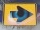
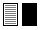

|
Die Symbole in Ihrer sprachenlernen24-Software
und ihre Funktionen
|

|
Anhören, bitte!
Wenn Sie auf das Lautsprechersymbol
klicken, öffnet sich ein Audio-Programm auf Ihrem Rechner und
Sie werden hören, was Sie gerade lesen.
|

|
Ein Schritt nach vorne!
Wenn Sie auf dieses Symbol klicken, gehen Sie einen Schritt
nach vorne.
In den Listen der Wortarten wechseln Sie mit diesem Symbol zur nächsten Liste.
In den Listen der Sachgruppen wechseln Sie mit diesem Symbol zur nächsten Liste der Sachgruppen.
In den Übungen wechseln Sie zur nächsten Abfrage; es wird der nächste Satz oder das nächste Wort abgefragt.
|

|
Ein Schritt nach hinten!
Wenn Sie auf dieses Symbol klicken, gehen Sie einen Schritt
zurück.
In den Listen der Wortarten und Sachgruppen kehren Sie mit Hilfe dieses Symbols zur vorangegangenen Wortliste zurück.
In den Übungen gehen Sie zur vorhergehenden Abfrage zurück; es wird der vorhergegangene Satz oder das vorhergegangene Wort abgefragt.
|

|
Alles anzeigen!
Wenn Sie auf dieses Symbol klicken, wird der Inhalt aller Wortlisten angezeigt.
Mit dieser Funktion können Sie sich alle 42 Listen der Wortarten und Sachgruppen auf einmal anzeigen lassen.
So bekommen Sie schnell einen Überblick über alle Lerninhalte.
|

|
Sprache wechseln, bitte!
Mit diesem Symbol können Sie Ausgangs- und Zielsprache
Ihrer Abfragen festlegen bzw. vertauschen. Mit einem Klick
wechseln Sie zum Beispiel von der Abfrage der Fremdsprache zur
Abfrage der deutschen Übersetzung.
|

|
Ausdrucken, bitte!
Bei Ihrem Sprachkurs lassen sich sowohl Karteikarten, als auch die Listenansicht der Vokabeln ausdrucken.
|
|
Wechseln von Wortart zu Sachgruppe, bitte!
Dank dieser Funktion können Sie zwischen den Wortarten und den Sachgruppen hin- und herspringen.
|

|
Lösung anzeigen!
Wenn Sie eine Abfrage nicht lösen konnten, so klicken Sie
auf dieses Symbol: Die Antwort erscheint. Aber Achtung! Da Sie
jetzt die Lösung angeschaut haben, wird diese Antwort nicht
als richtig gewertet.
|

|
Vorhergegangene Abfrage mit Lösung anzeigen!
Wenn Sie in einer Übung die Abfrage mitsamt der Lösung
noch einmal sehen wollen, klicken Sie bitte auf dieses Symbol.
|

|
Nächste Abfrage mit Lösung anzeigen!
Wenn Sie die nächste Abfrage mitsamt der Lösung
aufrufen wollen, dann drücken Sie bitte auf diesen Knopf.
|
|
Übung beenden!
Durch die Betätigung dieses Knopfes brechen Sie Ihren
Lernvorgang in der Langzeitmethode ab, ohne dass die Auswertung
Ihrer Übungen verloren geht. Auch bekommen Sie einen Startcode, damit Sie an der Stelle, an der Sie abbrechen mussten, nächstes Mal wieder einsteigen können.
|

|
Löschen, bitte!
Sie können sämtliche Vokabeln während einer Übung durch Knopfdruck aus Ihrer Abfrageliste entfernen.
Auf diese Weise werden Vokabeln, die Sie schon kennen, nicht mehr abgefragt und Sie kommen mit dem Lernen schneller voran!
Bitte beachten Sie: Diese Funktion gilt aber nur für die gerade ausgeführte Übung.
Wenn Sie den Kurs neu starten oder in eine andere Art der Übung wechseln, werden die gelöschten Vokabeln wieder neu abgefragt.
Sie löschen also keine Einträge in der Software, sondern schließen nur manche Abfragen aus der gerade bearbeiteten Übung aus.
|

|
Die Ampel auf Grün schalten!
Dieses Symbol finden Sie nur in der Quickshow.
Wenn Sie auf die grüne Ampel klicken, beginnt die Quickshow.
Sie sehen jetzt in dem zeitlichen Abstand, den Sie zuvor selbst bestimmt haben, alle Lerneinheiten dieser Lektion zum Wiederholen.
|

|
Die Ampel auf Rot schalten!
Dieses Symbol finden Sie nur in der
Quickshow.
Wenn Sie auf die rote Ampel
klicken, hält die Quickshow an. Zum Fortfahren schalten Sie
die Ampel einfach wieder auf Grün.
|

|
Die linke Seite verstecken!
Sie können das Übersetzen der Vokabeln mit dieser Funktion üben: Wenn Sie auf dieses Symbol klicken, wird die linke Seite -
also Latein - verdeckt. Sie kennen diese Übung vielleicht noch aus Schulzeiten.
Wenn Sie jetzt mit dem Zeiger Ihrer Maus über den schwarzen Balken wandern, wird die Lösung wieder sichtbar.
|
|

|
Die rechte Seite verstecken!
Sie können auch die rechte Seite - also die deutsche Übersetzung - der Vokabelliste abdecken lassen.
Wenn Sie jetzt mit dem Zeiger Ihrer Maus über den schwarzen Balken wandern, wird die Lösung wieder sichtbar.
|

|
Beide Seiten verstecken!
Mit dieser Funktion können Sie
beide Seiten abdecken. So testen Sie, ob Sie an zufällig
gewählten Stellen die Übersetzung in die andere Sprache
schon kennen.
|